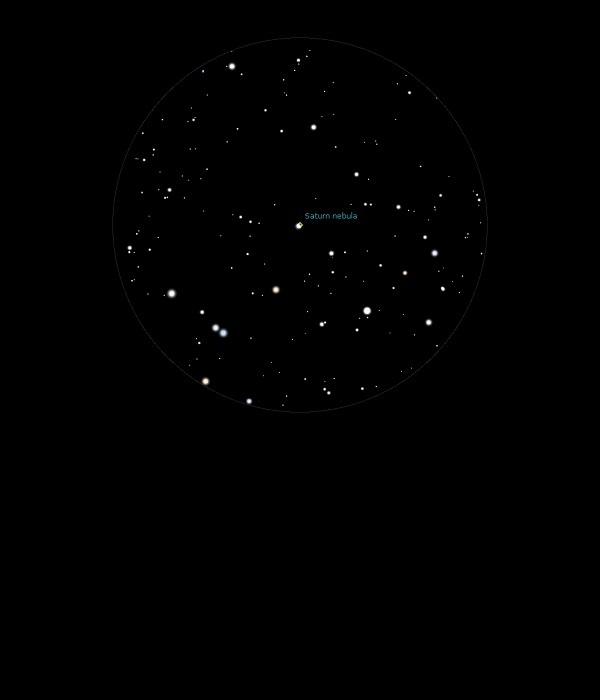

NGC 7009
Planetary Nebula in Aquarius
NGC 7009
Mag 8.0
The Saturn Nebula, Caldwell 55
04/11/13
Little
more than a fuzzy out of focus star in 12mm
Actually
rather more defined 1n 25mm against a dark field
19/07/15
A small but very bright oval, presumably hence it's name The
Saturn Nebula
Just a hint of an oval ring with a darker centre in 12mm
25/09/16
Small but distinct colour, a pale blue haze, with a well
defined oval shape in 12mm with hints of the strange lobes at
each end
Sits in a rather sparse FOV, especially in 7mm where it does
not appear to reach focus